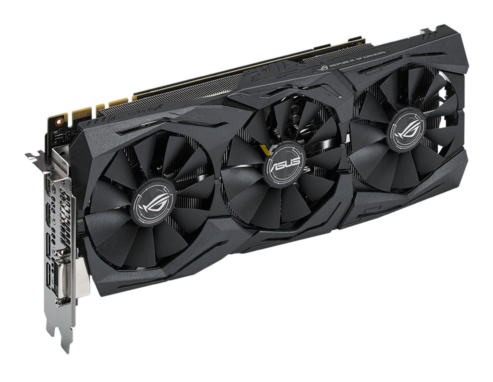

DANIEL
TRAN
On this page you'll find some tech that I own.
These are some of the daily electronics I use.
And some I have owned in the past.
A phone I've owned for about 3 years, currently using it.
One Plus One
A one year old laptop that I have been using for school.
A very expensive laptop that is not that best for gaming but very useful
for coding and developing.
Macbook Pro 13' Retina 2015 Edition
My current GPU for my home computer that recently replaced a Gigabyte GTX760
This GPU is a fairly new model which features 8008 MHz in memory clock which is much
more than my older GPU.

ASUS GTX1070 Strix
My older phone before I got my OPO.
Samsung Galaxy Note 3